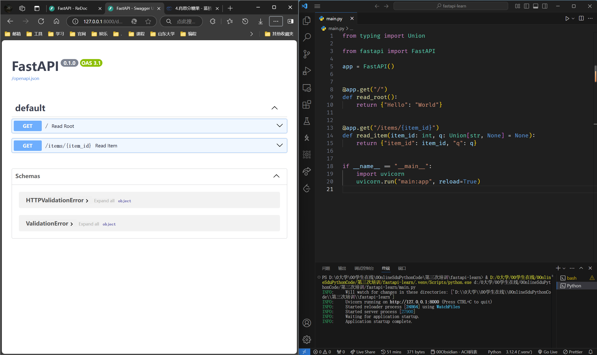
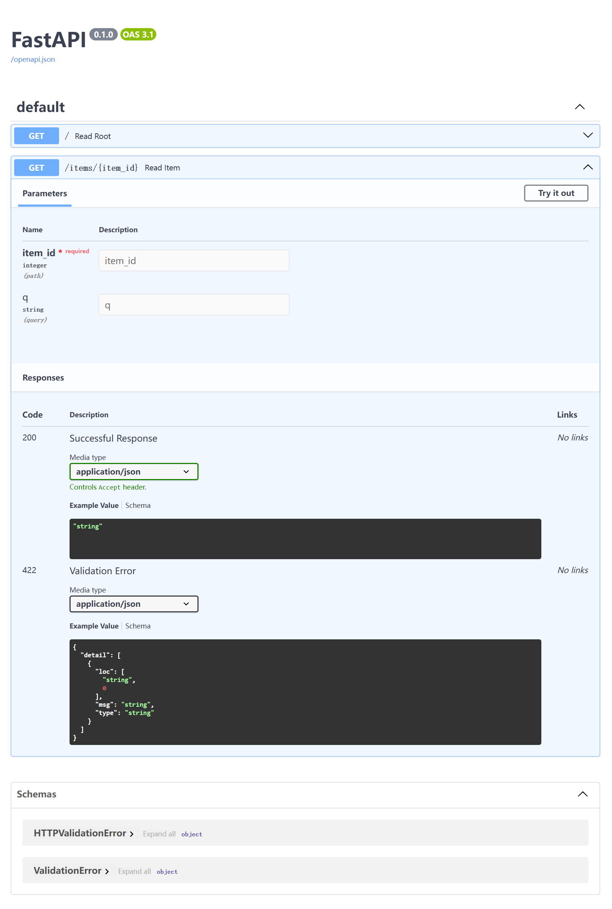
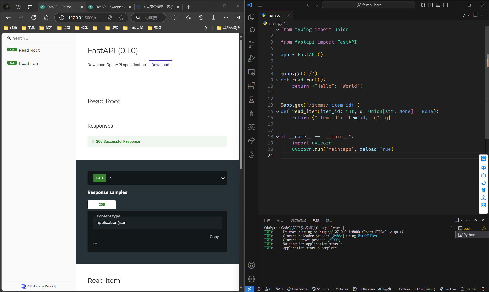

2 安装与示例
1 安装¶
1 | |
你还会需要一个 ASGI 服务器，生产环境可以使用 Uvicorn 或者 Hypercorn。
ASGI 服务器：异步服务器网关接口，定义了一套标准的接口规范，用于连接 Web 服务器和应用框架，能实现异步处理和响应
它将电脑变成一台服务器，能够使我们在我们的电脑上来接收网络请求，并做出响应。
这里我们用 Uvicorn，它是一个高性能轻量级的 ASGI 服务器
1 | |
2 示例¶
2.1 创建¶
- 创建一个
main.py 文件并写入以下内容:
1 2 3 4 5 6 7 8 9 10 11 12 13 14 15 | |
2.2 运行¶
2.2.1 方法一：指令启动¶
通过以下 uvicorn 指令来启动服务器：
1 | |
关于
uvicorn main:app --reload 命令......¶
uvicorn main:app 命令含义如下:
-
main：main.py 文件（一个 Python "模块"）。-
app：在main.py 文件中通过app = FastAPI() 创建的对象。-
--reload：让服务器在更新代码后重新启动。仅在开发时使用该选项。
之后终端里会有提示信息：
1 2 3 4 5 6 | |
按 Ctrl+C 退出服务器
2.2.2 方法二：在 main.py 中加入代码¶
此方法更为方便，可以直接 F5 运行。
1 2 3 | |
uvicorn.run() 函数的常用参数含义：
-
第一个参数
"main:app"：文件名和FastAPI对象的名字 -
第二个参数
reload：设为True，每次更改运行时进行重新加载
2.3 测试与使用¶
2.3.1 直接访问¶
使用浏览器访问 http://127.0.0.1:8000/items/5?q=somequery。
/items/ 是main.py 中 API 定义的路径
你将会看到如下 JSON 响应：
1 | |
你已经创建了一个具有以下功能的 API：
- 通过 路径
/ 和/items/{item_id} 接受 HTTP 请求。 - 以上 路径 都接受
GET 操作（也被称为 HTTP 方法）。 -
/items/{item_id} 路径 有一个 路径参数item_id 并且应该为int 类型。 -
/items/{item_id} 路径 有一个可选的str 类型的 查询参数q。
2.3.2 交互式 API 文档¶
2.3.2.1 Swagger UI¶
现在访问 http://127.0.0.1:8000/docs。
你会看到自动生成的交互式 API 文档（由 Swagger UI生成）：

点开详情页，像这样↓

-
Parameters：参数 -
Responses：响应 -
Try it out：点一下，可以测试 API -
在下面的
Parameters 的输入框里输入参数，点Execute(执行)按钮，就会模拟浏览器给 API 发一个网络请求 -
/openapi.json：点击之后显示 Swagger UI 渲染的页面的原 json 格式数据
2.3.2.2 ReDoc¶
访问 http://127.0.0.1:8000/redoc。
你会看到另一个自动生成的文档（由 ReDoc 生成）：

-
优点：好看
-
缺点：不可交互，只能看
3 概念¶
3.1 路径¶
这里的「路径」指的是 URL 中从第一个 / 起的后半部分。
所以，在一个这样的 URL 中：
1 | |
...路径会是：
1 | |
「路径」也通常被称为 「端点」或「路由」 。
开发 API 时，「路径」是用来分离「关注点」和「资源」的主要手段。